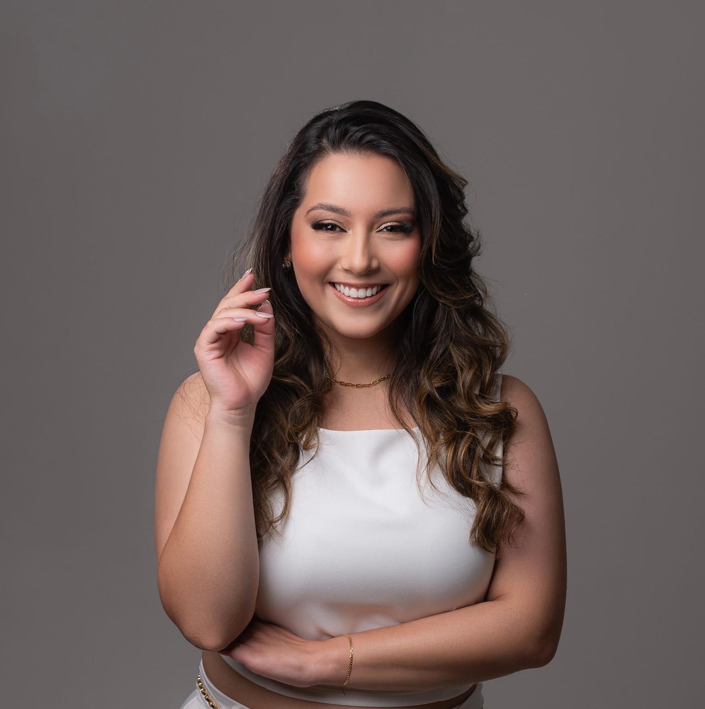
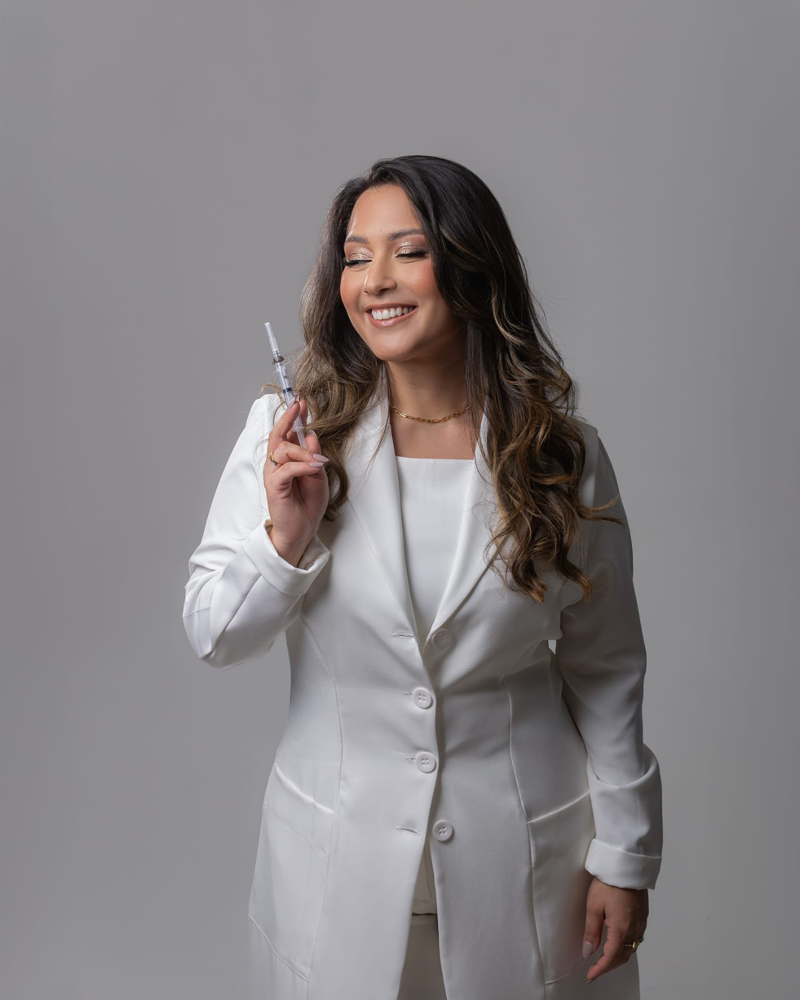
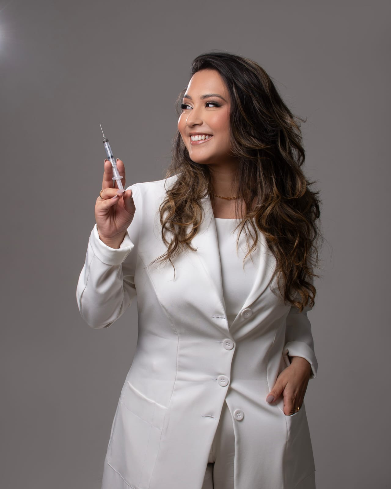

Botox deixa o rosto congelado.
É mito. Os pontos e a quantidade são definidos na avaliação, pensando em naturalidade. Você continua com as suas expressões.
Enfermeira · Indaiatuba, SP
Da saúde da sua pele ao pós-operatório da gestante. Eu explico cada passo, sem pressa, e só indico o que faz sentido para você.

Prazer, eu sou a Duda
Sou a Maria Eduarda, a Duda para quem já passou por aqui. Escolhi a enfermagem estética porque ela junta as duas coisas que mais gosto: técnica e gente.
No meu atendimento você entende o porquê de cada etapa. Nada de termos difíceis, nada de pressa. Primeiro eu escuto, depois a gente decide junto.
Todo cuidado começa com uma avaliação. É nela que eu conheço você e a sua pele.
Biossegurança, material descartável e produto lacrado, aberto na sua frente.
O objetivo é você se reconhecer no espelho. Só que mais descansada.
O que eu faço
Cada tratamento é indicado na avaliação, de acordo com o que a sua pele e o seu momento pedem.

Um plano para a sua pele: o que fazer aqui, o que fazer em casa e quando voltar. Acompanhado de perto, ajustado com o tempo.
Higienização, extração feita com técnica e finalização com hidratação e proteção. E um pedido: pare de espremer cravo em casa.
Toxina botulínica e outros injetáveis, sempre depois da avaliação e com produto lacrado. A ideia é parecer descansada, não diferente.
Protocolos que estimulam a própria pele a se renovar, respeitando o tempo dela.
Luz de baixa intensidade como apoio à cicatrização e ao conforto da pele, inclusive no pós-operatório.
Acompanhamento de cicatrizes recentes ou antigas, com orientação para cada fase da recuperação.
Fitas aplicadas sobre a pele para acompanhar a recuperação depois da cirurgia, inclusive da cesárea.
Saiba mais sobre o cuidado maternoCuidado materno
Depois da cesárea, o seu corpo pede atenção, e você merece ser cuidada enquanto cuida. O taping pós-operatório é aplicado sobre a pele e acompanha a recuperação junto com as orientações da sua equipe médica.
Essas são as dúvidas que eu mais ouço. Respondo todas na conversa.
Estou grávida, quero entender“Seu pós-operatório merece cuidado com técnica e com carinho. Vamos conversar sobre o que é melhor para você?”
Como funciona
Você me chama no WhatsApp, conta o que procura e tira as primeiras dúvidas.
Olho a sua pele com calma, entendo a sua rotina e explico as opções. Orientação clínica, só pessoalmente.
Você sai sabendo o que vamos fazer, por que, e como continuar o cuidado em casa.
Mito ou verdade?
Escolha uma resposta em cada cartão.
Botox deixa o rosto congelado.
É mito. Os pontos e a quantidade são definidos na avaliação, pensando em naturalidade. Você continua com as suas expressões.
Espremer cravo em casa não faz mal.
É mito. Sem técnica e higiene, a pele pode inflamar e marcar. A extração faz parte da limpeza de pele por um motivo.
Protetor solar é todo dia, mesmo nublado.
É verdade. A radiação passa pelas nuvens. É o passo da rotina que não dá para pular.
Botox é só para quem já tem ruga.
É mito. Quem define se e quando faz sentido é a avaliação, não a idade nem a ruga.
Dúvidas frequentes
O valor depende da avaliação, porque cada caso é único. Na conversa eu explico como funciona e o que está incluso.
Dúvidas gerais, sim. Orientação clínica e indicação de tratamento, só na avaliação presencial. É o jeito seguro de cuidar de você.
Depende do procedimento. Alguns precisam esperar o bebê chegar, outros podem ser feitos com segurança. A gente conversa sobre isso na avaliação, junto com as orientações do seu obstetra.
O momento certo depende da sua recuperação e da liberação da equipe médica. O ideal é conversarmos ainda na gestação, para você chegar no pós-operatório já sabendo como vai ser.
Em Indaiatuba, SP. O endereço completo vai junto com a confirmação do seu horário.
No Instagram
@dra.mariaeribeiroDicas de pele, bastidores e respostas para as perguntas da caixinha.

Agende sua avaliação